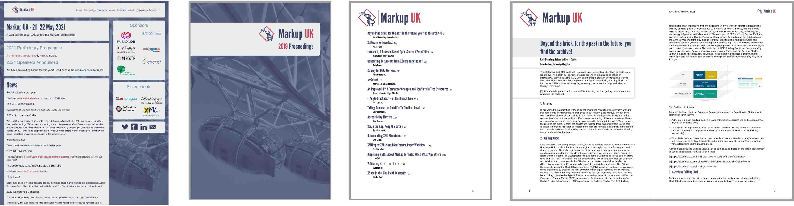

As stated previously, the 2018 proceedings used a Garamond font. It was initially
intended to continue to use the Garamond in the restyling, but this Garamond has only
regular and italic styles and does not have a bold weight. This was almost okay, because
the heading hierarchy could have been indicated solely by changing
font size, font style, and spacing before and after titles.
However, some of the papers used DocBook’s <emphasis role="strong">,
which is typically expected to render as bold text.
The Markup UK website has its own distinctive style, so the current PDF styles are based on that. Major headings use the same colour and ‘League Gothic’ font as the main title in the website, while minor heading and titles of tables and figures use the font with black text.
Figure 1. Website 'look-and-feel' applied to proceedings
|  |
The CSS for the website uses a ‘font-family’ property setting for body text that resolves as a Helvetica-like font on every platform:
font-family: "Helvetica Neue", Arial, sans-serif, "Apple Color Emoji", "Segoe UI Emoji", "Segoe UI Symbol";
The proceedings instead use local copies of the open-source Liberation Sans font family [LIBERATION] so that PDFs produced on Windows and Linux are identical. The two members of the Markup UK committee who work on the proceedings use different operating systems that provide different fonts, so this is essential if they are to avoid seemingly random differences in their formatted proceedings.
Liberation Sans is a metrically compatible[14] open-source replacement for Arial [ARIAL], which has a proprietary license. Arial, which is packaged with Microsoft Windows, was created to be metrically identical to Helvetica so that a document designed for Helvetica could be displayed and printed without having to pay for a Helvetica license.
Liberation Sans has a complementary Liberation Mono font family that is used for program listings, etc. Liberation Mono is metrically compatible with Courier New, although its shapes are closer to Liberation Sans than to Courier New.
To save from having to configure the XSL formatter to use the fonts, the XSL-FO uses an AH Formatter extension for declaring local fonts inside fo:declarations:
<!-- https://github.com/liberationfonts/liberation-fonts/releases -->
<axf:font-face
src="url('{$muk-xsl.dir}/liberation-fonts-ttf-2.00.5/LiberationSans-Regular.ttf')"
font-family="Liberation Sans" />
<axf:font-face
src="url('{$muk-xsl.dir}/liberation-fonts-ttf-2.00.5/LiberationSans-Bold.ttf')"
font-family="Liberation Sans"
font-weight="bold" />The red highlight from the Markup UK logo is reused in list item markers and in
callout numbers in a DocBook <calloutlist>.
Figure 2. programlisting callouts use Markup UK red
List markers for
<itemizedlist> are also diamond-shaped to reflect the overlapped ‘<>’
diamond in the Markup UK logo.
Figure 3. List markers reflect the Markup UK logo
The grey rectangles with rounded corners from the website are reflected in the front cover title, paper titles, and as a border delimiting an abstract from the rest of its paper.